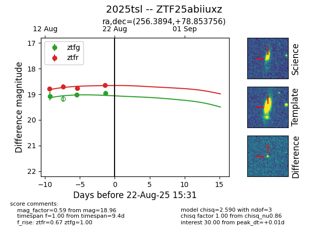

Target 2025tsl at 2025-08-22 15:31, see:
FINK: fink-portal.org/ZTF25abiiuxz
Lasair: lasair-ztf.lsst.ac.uk/objects/ZTF25abiiuxz
ALeRCE: alerce.online/object/ZTF25abiiuxz
TNS: wis-tns.org/object/2025tsl
YSE: ziggy.ucolick.org/yse/transient_detail/2025tsl
alt names
ZTF25abiiuxz (ztf,alerce)
2025tsl (tns,yse)
coordinates:
equatorial (ra, dec) = (256.3894,+78.85376)
galactic (l, b) = (111.2086,+31.60561)
photometry
last ztfg=18.96, ztfr=18.65
3 ztfg, 4 ztfr detections
